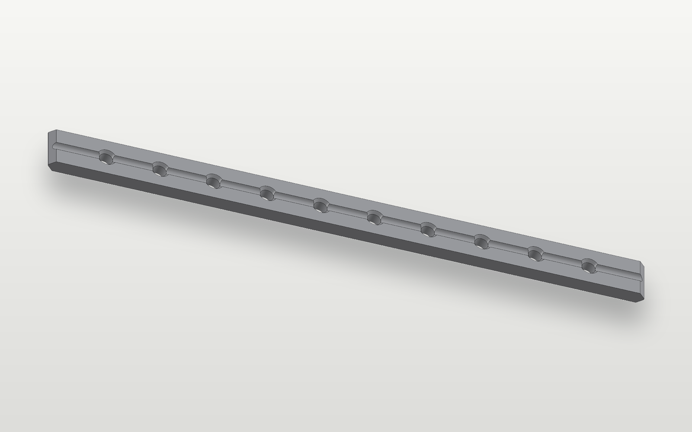

Biomedical Engineering @ University of Michigan
AdityaHansoty
Building at the intersection of the body and a machine: prosthetics, wearable robots, and medical devices.

- LocationAnn Arbor, MI
- FocusProsthetics, wearable robots, medical devices
- NowSystems engineering intern, Department of the Navy
- AlsoExoskeleton research intern, Locomotor Control Systems Lab
01About
University of MichiganI'm a biomedical engineering student at the University of Michigan, minoring in computer science.
My interests lie at the intersection of the body and a machine, with the goal of improving quality of life.
Currently, I'm a systems engineering intern with the Department of the Navy, applying deep learning to medical device signal data, and an exoskeleton research intern at the Locomotor Control Systems Lab at the University of Michigan.
Previously, I've worked as a summer research intern at the University of Illinois Chicago Rehabilitation Robotics Lab and at UChicago Medicine, where I contributed to projects spanning wearable robotics, prosthetic systems, and biomedical research.
- NowSystems engineering internDepartment of the Navy, Naval Medical Research Unit San Antonio
- NowExoskeleton research internLocomotor Control Systems Lab, University of Michigan
- BeforeSummer research internRehabilitation Robotics Lab, University of Illinois Chicago
- BeforeSummer research internUChicago Medicine
02Work
04 projects · click a row-
A powered ankle-foot prosthesis taken through 10 human subject trials: TwinCAT operation, Vicon calibration, and synchronized EMG, ECG, and metabolic cost capture. Threaded encoder caps designed in SolidWorks and CNC machined.
Gallery
-
A signal-agnostic open source AR platform that pixel-streams arbitrary LSL biosignals into a HoloLens 2; sole developer. Motion-to-photon latency was 120 ms on the headset versus 119 ms on a wired monitor (validated against injected delays up to 1 s), and in a two-participant pilot, AR step-length guidance reduced gait asymmetry by 41% and 53%.
Gallery
-
A 3D-printed two-finger gripper driven by surface EMG: MG996R servo, MyoWare 2.0 sensor, and Arduino Uno on a separate supply to stop servo stutter under load. An LDA classifier on five time-domain features separates rest, open and fist at 99.4% accuracy, trained on 9,000 labelled windows.
Gallery
-

Parametric locking compression plate designed in SolidWorks and validated to ASTM F382 via finite element analysis. Bending FOS 1.73, torsion FOS 2.36. Parallel Simulink model simulates fracture healing load transfer over 12 weeks.
Gallery
03Publications
02 papers-
01
ICRA 2027
Pixel-Streaming Augmented Reality for Real-Time Gait Biofeedback During Wearable-Robot Training
Hansoty A., Vyas R., Kim M.
Submitted -
02
IROS 2026
Visual Guidance During Human-in-the-Loop Optimization of Ankle-Foot Prosthesis Stiffness
Vyas R., Son C., Jeong H., Hansoty A., Kenny T.
Workshop: State of the Art in Robotic Leg Prostheses